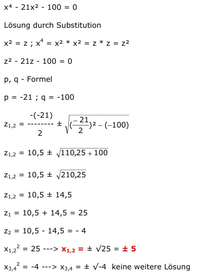

Quadratische Gleichungen Aufgabe 70 x⁴ - 21x² - 100 = 0 Lösung durch Substitution x² = z ; x4 = x² * x² = z * z = z² z² - 21z - 100 = 0 p, q - Formel p = -21 ; q = -100  z1,2 = 10,5 ± z1,2 = 10,5 ± z1,2 = 10,5 ± 14,5 z1 = 10,5 + 14,5 = 25 z2 = 10,5 - 14,5 = -4 x1,22 = 25 ---> x1,2 = ± √25 = ± 5 x3,42 = -4 ---> x3,4 = ± √-4 keine weitere Lösung.